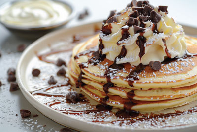

Peanut Butter Chocolate Chip Pancake
Peanut Butter Pancakes studded with chocolate chips!
Ingredients
- 1 cup all-purpose flour
- ¼ cup sugar
- 1 ½ tsp baking powder
- ¼ tsp salt
- ½ cup creamy peanut butter (This yields lighter and fluffier pancakes. For thick, dense pancakes you may increase to ⅔ cup)
- 1 tsp vanilla extract
- 1 egg lightly beaten
- 1 cup milk
- ½ cup semi-sweet chocolate chips
Optional Toppings
- Chocolate syrup
- Whipped cream
- ⅓ cup peanut butter (melted for 12-20 seconds)
Steps
- In medium-sized bowl, whisk together flour, sugar, baking powder and salt.
- In larger, microwave-safe bowl, microwave peanut butter for 15 seconds. Remove from microwave, stir in vanilla, and then stir in lightly beaten egg, until combined.
- Stir in milk until ingredients are combined (the peanut butter may be clumped and streaky, try to whisk until ingredients are well combined, but some streaks are OK).
- Pour dry ingredients into wet ingredients and stir once or twice. Add chocolate chips.
- Continue to stir until just combined (there may still be a few flour clumps, this is OK but do not overmix the batter)
- Lightly spray a nonstick pan with cooking spray and heat over medium-low heat.
- Once pan is heated, pour about ¼-⅓ cup batter into pan in circle to form pancake. The batter is a bit thick so use a knife or the back of a spoon to nudge some of the batter from the center and into the edges so that the pancake is even and not bulky in the center.
- Cook several minutes, until edges begin to bubble and appear cooked, and then flip and cook the rest of the way through.
- Transfer to plate and serve immediately, preferably topped with chocolate syrup, slightly melted peanut butter, and whipped topping.